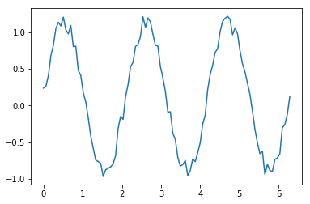

Jupyter notebook¶
A simple plot¶
[1]:
%matplotlib inline
import numpy as np
import matplotlib.pyplot as plt
N = 100
x = np.linspace(0,2*np.pi,N)
f = np.sin(3*x) + 0.25*np.random.random(N)
plt.plot(x,f,'-')
[1]:
[<matplotlib.lines.Line2D at 0x7f323aee6e10>]

Retrieving the web page¶
[2]:
import urllib.request
response = urllib.request.urlopen('http://www.ucla.edu/')
html = response.read()